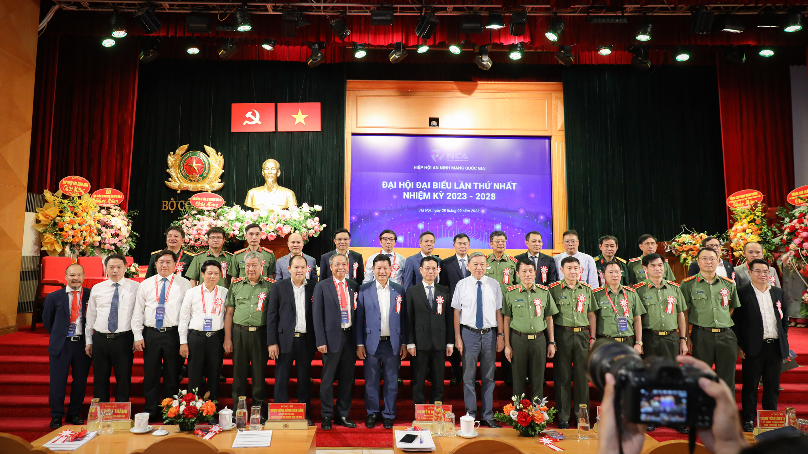
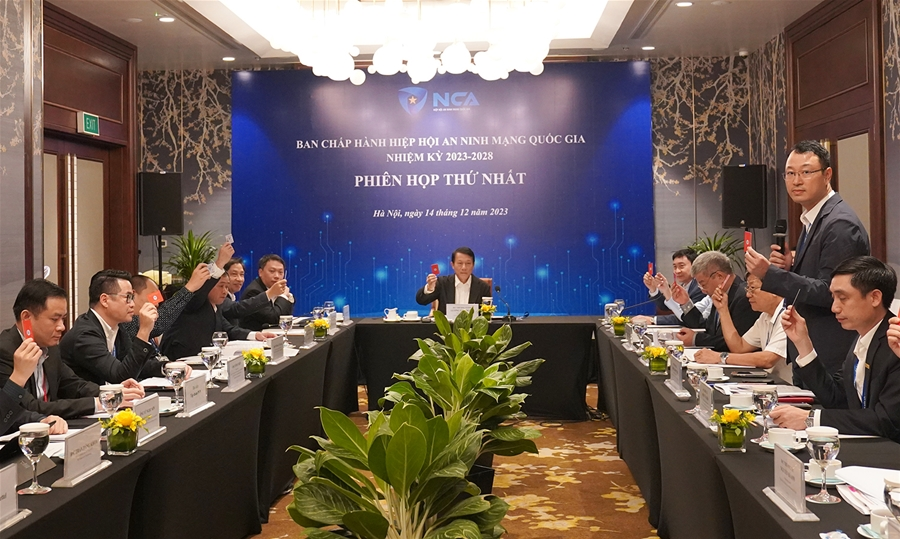

Viện Nghiên cứu có tư cách pháp nhân độc lập, trực thuộc Hiệp hội, thực hiện cung cấp các dịch vụ về nghiên cứu, tư vấn, đánh giá, phản biện về chính sách, pháp luật về an ninh mạng.
Hiệp hội An ninh mạng quốc gia được thành lập tháng 9/2023, là tổ chức xã hội - nghề nghiệp của công dân và tổ chức Việt Nam hoạt động trong lĩnh vực an ninh mạng. Sứ mệnh và tầm nhìn của Hiệp hội không chỉ tạo ra lợi nhuận kinh tế mà phải hướng tới mục tiêu trở thành động lực cho sự nghiệp xây dựng và bảo vệ Tổ quốc.
Đại hội đại biểu toàn quốc lần thứ nhất của Hiệp hội An ninh mạng quốc gia diễn ra ngày 8/9 đã bầu ra Ban chấp hành Hiệp hội và thông qua chương trình, phương hướng hoạt động nhiệm kỳ 2023-2028.

Đại hội đại biểu toàn quốc lần thứ nhất, nhiệm kỳ I (2023 - 2028)

Các đại biểu biểu quyết thông qua các văn bản tại Phiên họp Ban Chấp hành lần thứ nhất